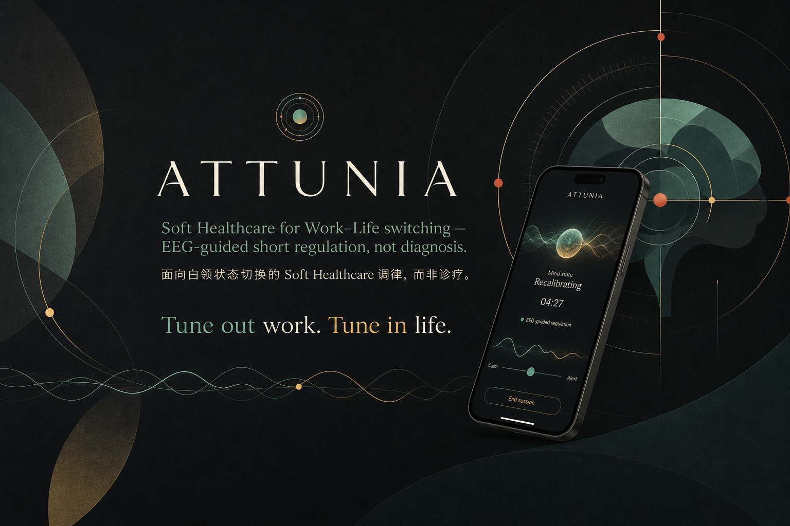
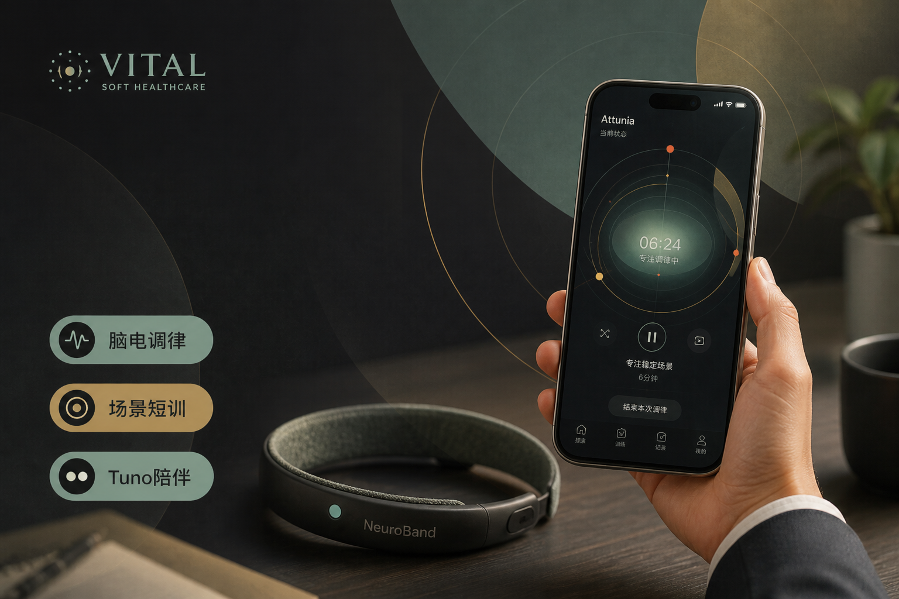

VITAL · Soft Healthcare
Attunia
帮助用户克服工作脑雾与 WLB 切换中的大脑状态真空期——心理调适 Agent。
Tune out work. Tune in life.
honesty Soft Healthcare / 非医疗 · 交互 + 部分工程原型
VITAL · Soft Healthcare
Attunia
帮助用户克服工作脑雾与 WLB 切换中的大脑状态真空期——心理调适 Agent。
Tune out work. Tune in life.
honesty Soft Healthcare / 非医疗 · 交互 + 部分工程原型
作品介绍
Attunia 面向下班后切不进休息的白领，用脑电（或演示信号）做传感器，用 Agent 给可替换、可退出的短练习建议——Pitch 讲清产品定位与效果假设，原型页让人走完一次体验；静态演示不能跑实机 TUNO Agent。
静态网页无法运行实机的 TUNO Agent。下面嵌的是 GitHub Pages 上的 purpose 路径，方便面试官当场点开走一眼。
产品故事 · Pitch P1–5
下面直接用路演图：一图一句中文 + 一句英文锚。不另写长篇判断文。
P1 · Friends
编排中枢 + 五位目录内专家，只拼现成练习，不即兴诊疗。
Who helps reclaim state — Tuno & friends.
P2 · Pain
启不来 → 扛过头 → 切不掉。人离开了工位，状态还没有。
Three vacuums in work–life switching.


P3 · Positioning
定位一句——克服工作脑雾与 WLB 切换里的大脑状态真空期；调节与福祉支持，不诊疗。
Soft Healthcare agent for the vacuum between work and life.

P4 · Sell
定制短训、接住尚未自知的走神、记忆反哺下一次推荐——头环只是入口。
EEG senses; the agent is the product.

P5 · Architecture
脑电 / 情境入 → Tuno 编排 → 短训交付 → 本机记忆回写。原始脑电不进外部 LLM。
Signal → estimate → self-report → suggestion → choice.

与「全屏打开 Pitch」同一套页面。路演 P9–P11（下一步 / TAM / 联系二维码）不在本页主叙事里展开。
原型 · P6
界面不必逐屏唠叨。路径一行看清；截图进折叠画廊。


通道文案是原型表达，不是已验证的情绪识别。


旁证 · 三点
真实 ADHD 用户试戴与口语反馈（喜欢专注模式古典乐；基线很低，冥想后专注分显著上升）。Soft Healthcare / 非医疗疗效宣称 · 个案演示口径。
静态页无法跑实机 TUNO Agent。无头环时可用演示信号把路径走完；GitHub Pages ≠ 已接头环或本地 Agent API。
反馈 · P7
ADHD 试戴个案演示口径：专注 23→80 等仅作单次可见变化描述。小样本 · 非疗效宣称 · Soft Healthcare。
质疑 · P8
他们多为睡眠 / 专注力机构向冥想 App。我们是工作与上下班场景的调适 Agent。
睡前与通用放松 · 被动选课播放
冥想练习中看状态 · 仍偏「练冥想」
工位 + 上下班切换 · Tuno 主动编排实况短训
Q1
为什么一定要用脑电？
Q2
为什么非得选你？
Answer · 说得对，但是——
收束：面向工作与上下班场景的大脑状态调适 Agent · Soft Healthcare：调节不诊疗。
链接
本地体验静态页 全屏 Pitch GitHub 仓库 GitHub Pages 首页 ledger · Attunia 资产
备注：静态网页无法运行实机的 TUNO Agent。
附录 · 默认收起
公开阅读以 Pitch 定位 + 可走完的原型为主。下面保留诚实边界。
已知 公开叙事 复盘判断 待补 未来验证
公开叙事 我不是先看见一条赛道才做它。我在意的是：人已经该休息了，却进不去休息。所以入口要低，离开要随时可以。

待补 年份、课程、当时有没有访谈。具体的个人疾病经历不放在公开页。
AnxiousKit 把问题放进概念。Attunia 把它做成可以演示的流程。MindCalm 是之后的 Future Exploration。黑客松日期和团队分工 待补。三者完成度不同，不能排成已验证的 V1 / V2 / V3。
Forward 版本说明：从「你可以选择一段练习」走到微电流或温热，是另一段合作里的产品概念与投资提案，不是 Attunia 被用户数据证明后的自然升级。发带是 Pitch 渲染，没有进入制造；主动刺激要单独的安全与有效性研究。


已知 15 份有效答卷，12 人 26–35 岁。11 人用刷手机缓解。9 人说近三个月常感到压力。问卷写明头戴和微电流之后，12 人只接受私密场景。9 人把「觉得没用」当成最大的阻力。
待补 Pitch 另引过 60 多份问卷。两份是否同一批人尚未核对，故不合并，也不倒回去当成 Attunia 开题时的研究。

体验拆成五层，不准跳层：Signal → Estimate → Self-report → Suggestion → Choice。约束句：Signal ≠ Emotion ≠ User Need ≠ Permission to Act ≠ Proven Benefit。
I design interfaces that respect uncertainty — so that technology can offer help without taking away human agency.